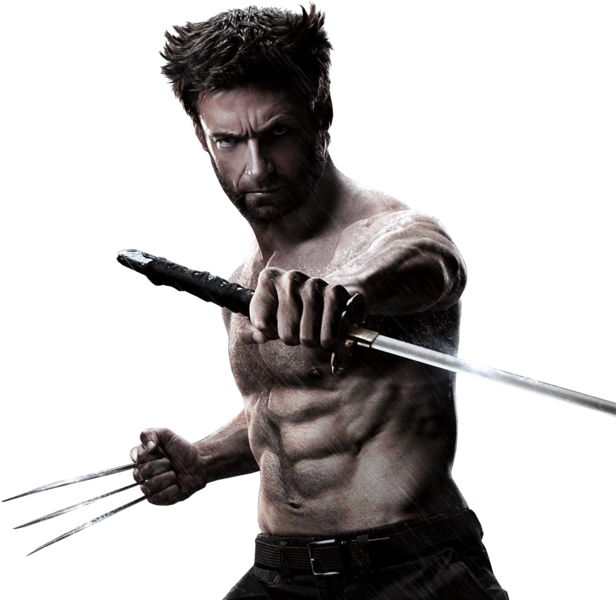

Wolverine nasceu como James Howlett em Alberta, Canadá, no século XIX. Seus poderes mutantes se manifestaram quando criança, após um incidente traumático que resultou na morte de seu pai biológico. Com o tempo, ele descobriu que seu pai adotivo, o jardineiro Thomas Logan, era seu verdadeiro pai. Após 100 anos de vida nas matas, Logan foi recrutado pelo governo do Canadá para participar do projeto Arma X, onde ganhou novos poderes, como a capacidade de projetar seus ossos para fora, formando garras.
 voltar